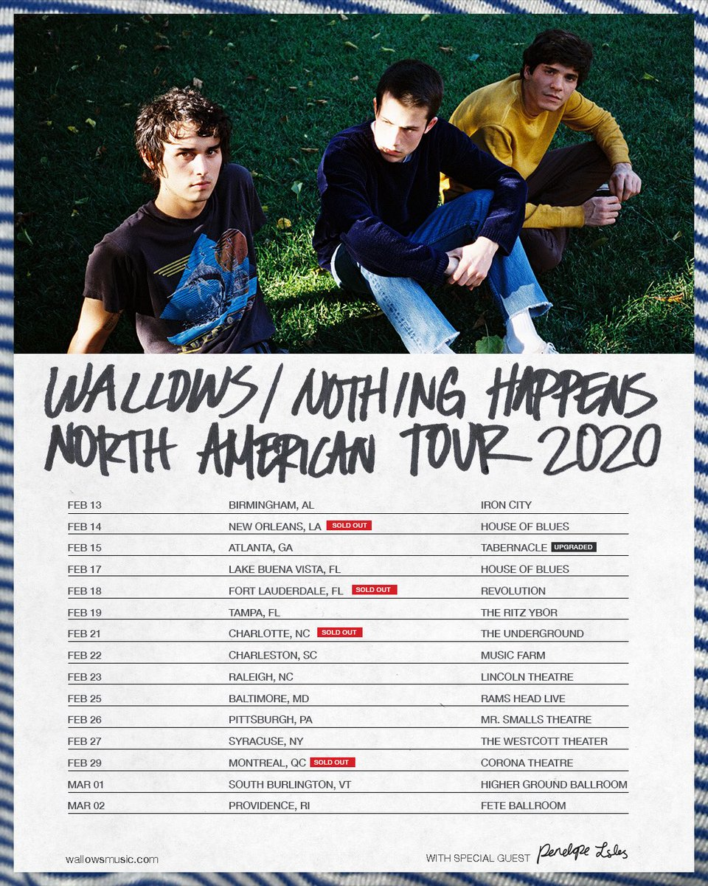

- Band name :Wallows
- Years active: 2017-present
- Origin: Los Angeles, South California, U.S
- Genres: Indie-rock, Alternative-rock, Bedroom-pop
Wallows is an American rock band based in Los Angeles composed of Braeden Lemasters, Cole Preston, and Dylan Minnette. The band began releasing songs independently in April 2017 starting with "Pleaser", which reached number two on the Spotify Global Viral 50 chart. In 2018, they signed a record deal with Atlantic Records and released their major label debut extended play Spring. Their debut studio album, Nothing Happens, was released in 2019 and included the single "Are You Bored Yet?".

The band's three members -Braeden Lemasters (guitar and vocals), Cole Preston (drums), and Dylan Minnette (guitar and vocals)- first formed a musical group as children in a music program: GigMasterz in Keyboard Galleria Music Center (Southern California), they were called "Join the Band". Over the course of the next decade, the three performed together using different band names. They also played the 2011 Warped Tour. In April 2017, the band released their first single under the Wallows moniker, "Pleaser". The song would eventually reach number two on the Spotify Global Viral 50 chart and number one on the KROQ Locals Only playlist. In May 2017, Wallows released a second single, "Sun Tan", and began playing live shows in the Los Angeles area, selling out The Roxy and the Troubadour. Their third single, "Uncomfortable", was released in September 2017. In November 2017, their song, "Pulling Leaves Off Trees", was premiered on Zane Lowe's Beats 1 radio show. That month, the band also announced their first headlining North American tour that would run from January to March 2018. The tour started in San Francisco on January 24. In February 2018, the band announced that they had signed to Atlantic Records and were planning to release their major label debut EP, Spring, in April 2018. They also released a new single, "Pictures of Girls", their first on Atlantic. The song was chosen as a "Critical Cut" by SiriusXM Alt Nation. Wallows ended their North American tour at South by Southwest in March 2018. Later in the month, they released a second track from Spring titled "These Days". The EP was released on April 6, 2018 by Atlantic Records and was produced by John Congleton. On February 1, 2019, Wallows released the single "Are You Bored Yet?" featuring Clairo. This song is a part of their debut album, Nothing Happens, released on March 22, 2019. A subsequent music video was also released on this day with a cameo of Noah Centineo and Kaitlyn Dever.
The "Pictures of Girls" performers will kick off their nationwide Nothing Happens 2020 Tour in Birmingham, Alabama on Feb. 13 (Tickets) and hit cities like New Orleans, Baltimore (Tickets), Pittsburgh, and more before coming to a close in Providence, Rhode Island on March 2 (Tickets). Tickets go on sale for the Wallows' Nothing Happens Tour on Oct. 4 (Tickets). Wallows band members, Braeden Lemasters (guitarist and frontman vocalist), Dylan Minnette (guitarist and vocalist), and Cole Preston (drummer) originally met at a child music program called the GigMasterz. Over the course of a decade, the collective went on several monikers before landing on Wallows and releasing their first single, "Pleaser" in April 2017. The track took off instantaneously reaching the number two spot on Spotify's Global Viral 50 Chart. Less than a year later, the three-piece group signed to Atlantic Records and released two major projects with the label in their Spring EP (2018), and their March 2019 released debut album, Nothing Happens.